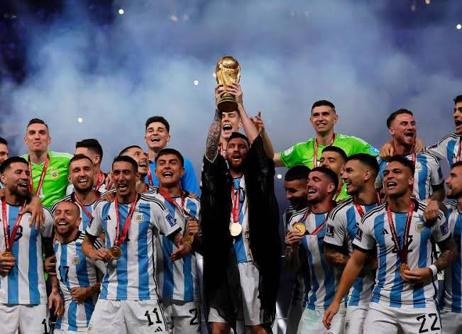
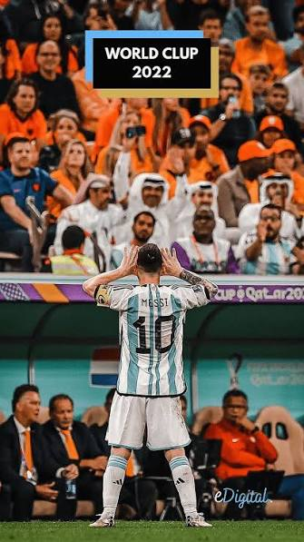

The Beginning
Discover Messi's childhood, his years at Newell's, and the first steps of an extraordinary journey.
From Rosario to World Champion. A story of sacrifice, perseverance, and greatness that inspired an entire nation and millions of football fans around the world.
Lionel Messi represents perseverance, humility, excellence, and dedication. From his early days in Rosario to lifting the FIFA World Cup with Argentina, his story has inspired generations of football fans across the globe.
Discover Messi's childhood, his years at Newell's, and the first steps of an extraordinary journey.

Explore the victories, challenges, records, and unforgettable moments that shaped his legacy.

Relive Messi's World Cup story and look ahead to the excitement surrounding the 2026 tournament.
